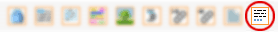
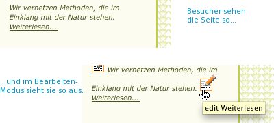
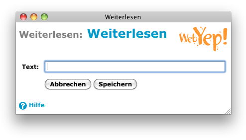
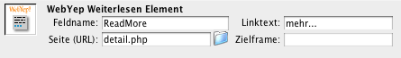

Weiterlesen

Das Symbol für das Weiterlesen-Element in der Objektpalette
Das WebYep Weiterlesen-Element wird verwendet, um editierbare Links am Ende von Produktbeschreibungen oder Anrisstexten zu erzeugen.
Dieses WebYep Element wird durch folgenden PHP Code repräsentiert:
<?php webyep_readMore("Feldname", "LinkText", "eine_andere_seite.php", "andererFrame"); ?> Details...
(siehe auch "Eigenschaften des Weiterlesen-Elementes" weiter unten)
- "Feldname": Ein Text – der Name für dieses Element.
- "LinkText": Ein Text – der Standardtext für diesen Link.
- "eine_andere_seite.php": Ein Text – der URL einer Seite, auf die das Element verweisen soll (Link). Kann auch ein absoluter URL sein (http://...).
- "andererFrame": Ein Text (optional) – der Name eines Frames (Rahmen), der ggf. für den Link als "target" (Ziel) fungieren soll.
Geben Sie einen Leertext ("") ein, wenn Sie kein Frameset verwenden und die verlinkte Seite nicht in einem neuen Fenster geöffnet werden soll.
Geben Sie "_blank" an, um die verlinkte Seite in einem neuen Fenster zu öffnen.

The Weiterlesen-Element in Aktion - durch Klicken
auf den Bearbeiten-Knopf öffnet sich das Weiterlesen-Ändern-Fenster

Das Weiterlesen-Ändern-Fenster
Formatierung des Weiterlesen-Elementes
WebYep weist dem Weiterlesen-Element eine CSS Style-Klasse zu. Indem Sie entsprechende Regeln für diese CSS-Klasse in Ihrem Stylesheet festlegen, können Sie das Aussehen des Weiterlesen Links gezielt beeinflussen.
Liste der CSS-Klassen:
| CSS Klassenname | wird zugewiesen |
| WebYepReadMoreLink | dem <a> Tag des Links. |
Eigenschaften des Weiterlesen-Elementes

Das Eigenschaftsfenster für das Weiterlesen-Element
Feldname
Ein Name für das Weiterlesen-Element. Falls kein Standardtext für den Link angegeben wurde, so wird bei leeren (unveränderten) Weiterlesen-Elementen im Bearbeiten-Modus der Feldname neben dem Bearbeiten-Knopf dargestellt.
Linktext
Der Standardtext für diesen Link. Falls dieser nicht angegeben wird, dann nutzt WebYep bei leeren (unveränderten) Weiterlesen-Elementen den Feldnamen als Linktext
Seite (URL)
Der URL (bzw. Dateiname) einer Seite, auf die beim Klick auf dieses Bild verwiesen werden soll.
Wenn das Weiterlesen-Element innerhalb einer Schleife (siehe WebYep Schleife Element) positioniert ist, verhält sich das Weiterlesen-Element ähnlich wie ein Menüeintrag: Die Seite die angezeigt wird, kann unterschiedliche Inhalte haben, je nachdem welcher der Links innerhalb der Schleife angeklickt wurde.
So kann man beispielsweise eine Schleife erzeugen, die verschiedene Produktbeschreibungen enthält. Eine solche Beschreibung würde dann z.B. aus einer Überschrift (Kurztext Element) und einer knappen Beschreibung (Fließtext, oder HTML-Text Element) bestehen, mit einem Weiterlesen-Element am Ende der Schleife. Durch Zuweisen des URLs einer Detailseite können BesucherInnen dann auf den Link klicken, um weiterführende Informationen zu erhalten.
Ziel (frame) - bei Verwendungen von Rahmen (target frame)
Wenn die unter der Eigenschaft "Seite (URL)" angegebene Seite beim Klick auf den Link in einem anderen Rahmen dargestellt werden soll, ist bei der Eigenschaft "Ziel (frame)" der Name des betreffenden Rahmens anzugeben.